Top Hobby Recommendations
Looking for a new hobby? Pick up one from the list below!
(hover over an image for details)
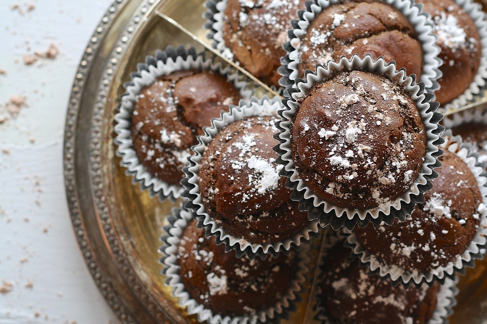 Baking is the process of mixing various ingredients together and applying heat to the mixture (in the oven) in order to create (usually) a sweet treat, whether that be cake, cookies, or bread.
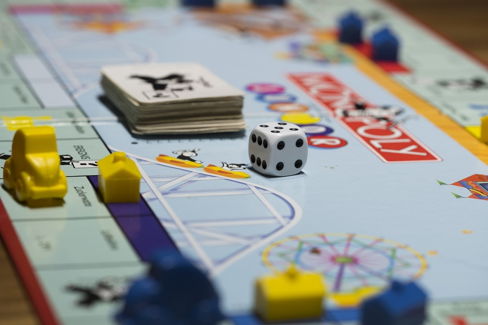 A board game is a tabletop game that typically uses a board and pieces, and those pieces are moved around according to a set of rules, and a player or team wins when the objective of the game is met.
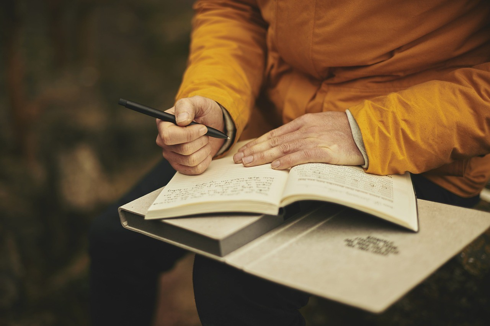 Creative writing takes place when one creates a piece of fiction, like a short story, poem, or play.
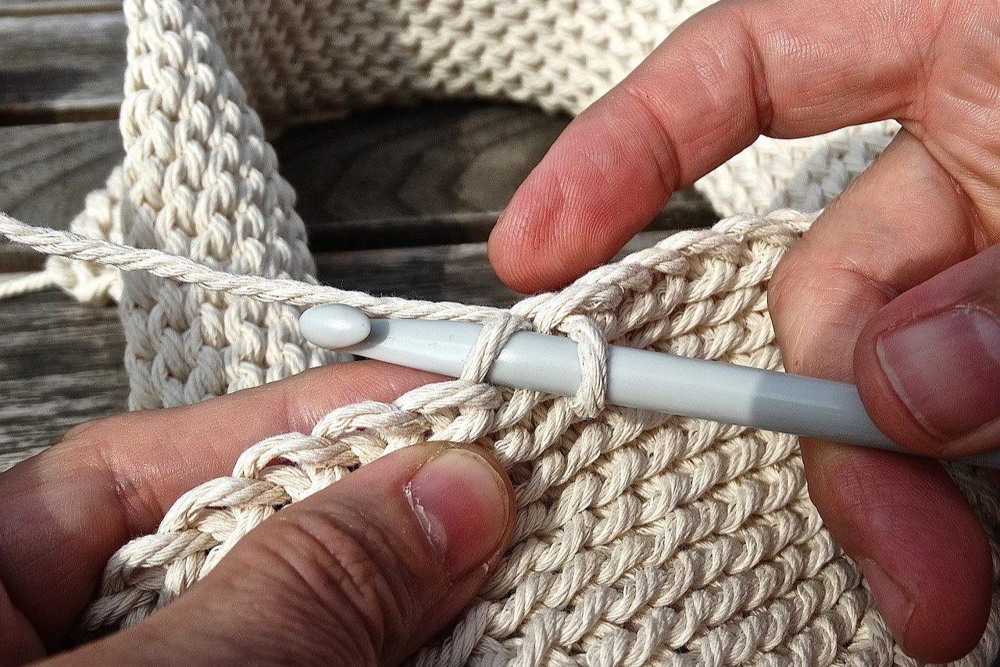 Crochet is a type of needlework technique that uses a hooked tool to create intricately woven pieces, including blankets, scarves, plushies, doilies, etc.
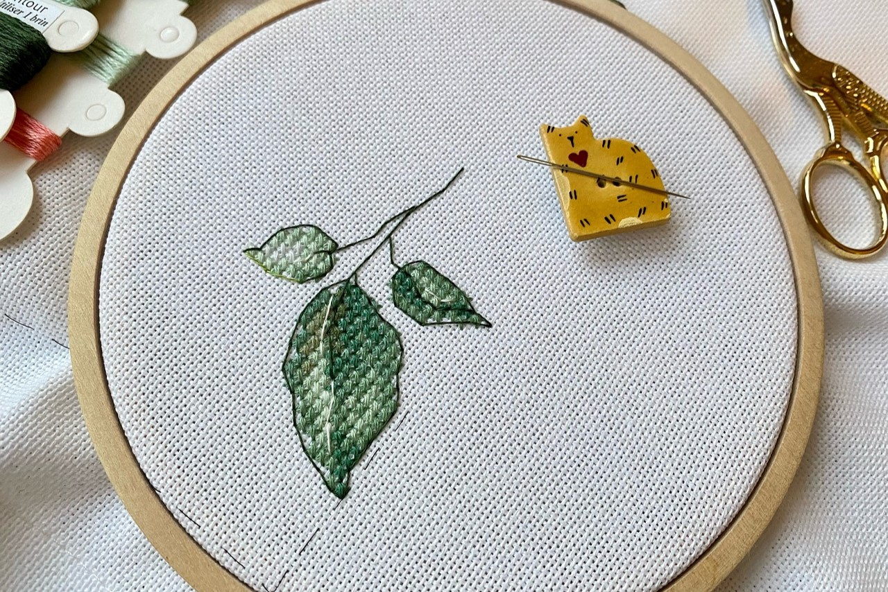 Cross stitch is a type of embroidery needlework that uses x-shaped stitches to create a pixel-art-esque pattern or design.
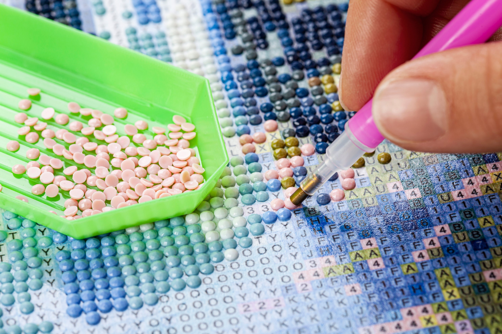 Diamond painting is a sort of combination of cross stitch and paint-by-numbers; uses an applicator pen to apply plastic/resin "diamonds" to a canvas.
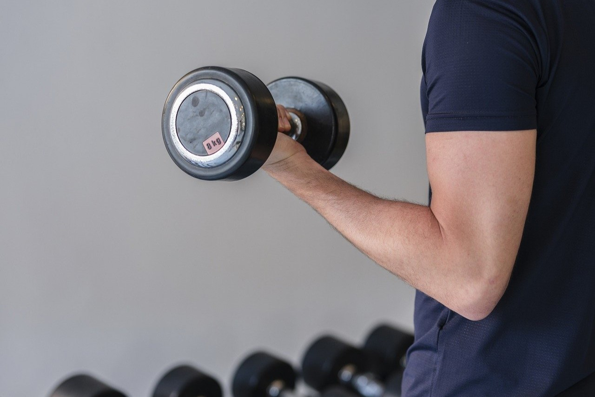
Exercise is any physical activity that may help improve physical fitness/health, as well as overall well-being.
It's important not to view it as a task, but rather, turn it into a fun hobby!
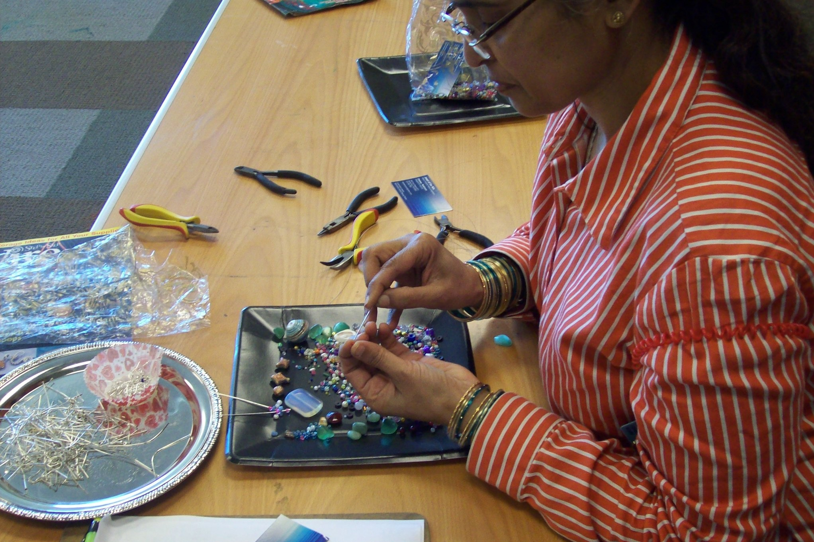 Jewelry-making is a somewhat tedious process of using string, beads, and other precious trinkets to create one cohesive piece of jewelry, whether that be a necklace, bracelet, etc.
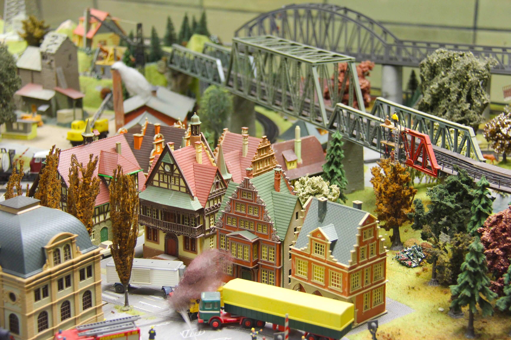 Model kits come in many forms, including cars (modern and vintage), planes, warcraft, and even houses!
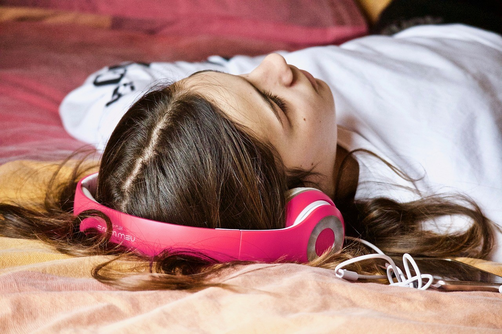
Music comes in many different forms and can be interpreted in different ways depending on the listener.
It's a great tool to form social connections and to help keep your brain focused.
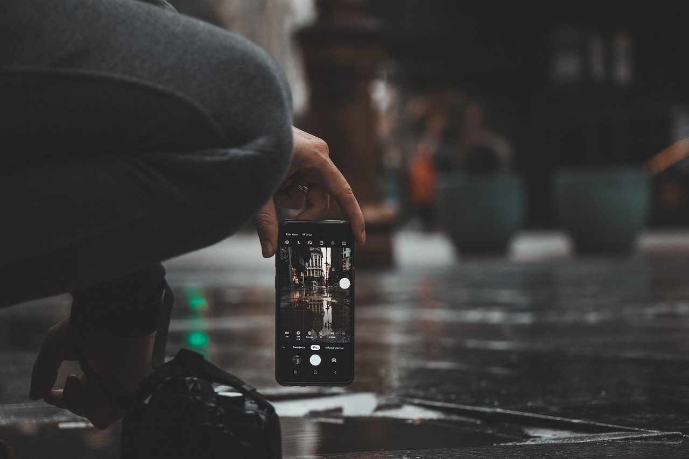
Photography literally means "drawing with light"
Digitally speaking, it is the process of recording an image using a digital electronic (phone) or magnetic memory (storage card).
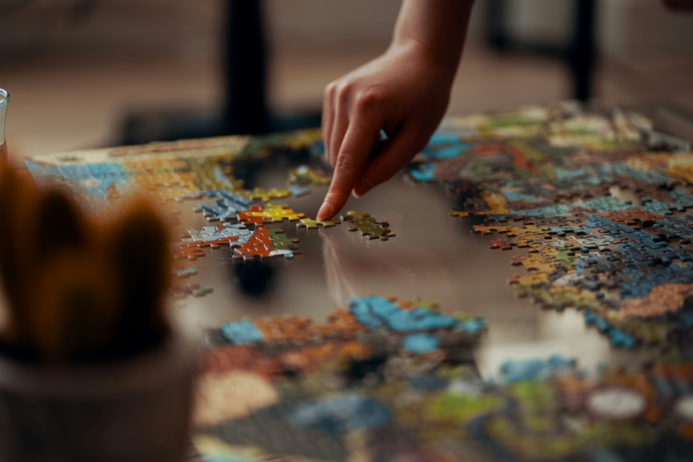 A puzzle is a set of various, irregularly-cut pieces that fit together to form a picture or photo.
Reading books is a healthy and relaxing way to wind down after a long day, while also improving cognitive function, focus, empathy, stimulating creativity, and increasing vocabulary.
Socializing may include spending time with family, hanging out with friends, or meeting new people.
Types of walks include:
hiking on trails in the woods, walking through the streets of downtown, or wandering around your neighborhood.